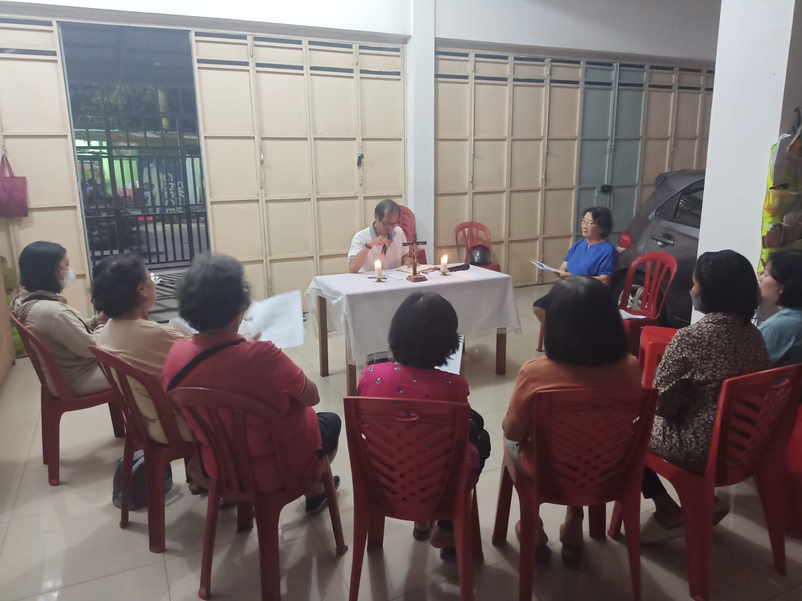
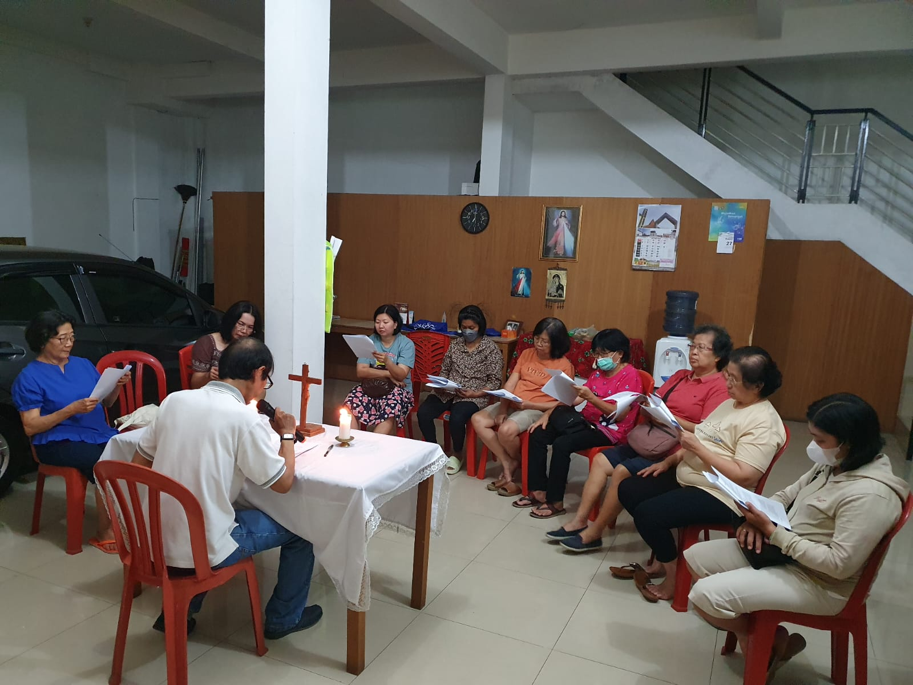
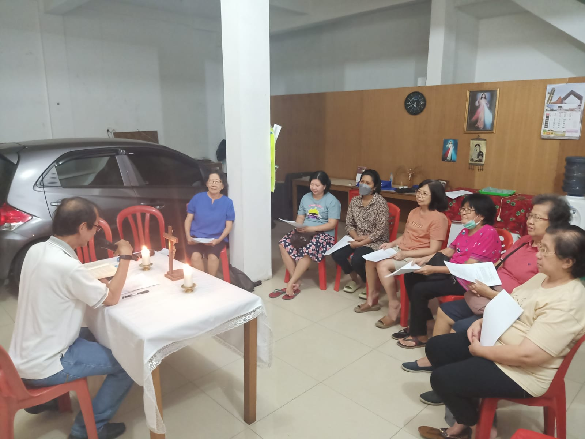

Pertemuan Kredo ke 8 dan 9
|  |  |  |
Pertemuan kredo ke 8 dan ke 9 mempelajari bersama tentang pemahaman iman utuh akan “Aku percaya akan Roh Kudus, Gereja Katolik yang kudus” dan “Aku Percaya akan persekutuan para Kudus, pengampunan dosa, kebangkitan badan, kehidupan Kekal. Amin” sehingga kita dapat menyatakan pengakuan iman dengan mendalam, menghayatinya dengan tangguh dan teguh dan mewartakannya dengan utuh.
Kredo ke 8, Materi pembelajaran diambil dari bahan pendalaman Paroki Mengajar dan Kopendium Katekismus Gereja Katolik(KKGK) 177-193. KKGK lengkap
Inspirasi 1 Petrus 1: 13-16
1:13 Sebab itu siapkanlah akal budimu, waspadalah dan letakkanlah pengharapanmu seluruhnya atas kasih karunia yang dianugerahkan kepadamu pada waktu penyataan Yesus Kristus.
1:14 Hiduplah sebagai anak- anak yang taat dan jangan turuti hawa nafsu yang menguasai kamu pada waktu kebodohanmu,
1:15 tetapi hendaklah kamu menjadi kudus di dalam seluruh hidupmu sama seperti Dia yang kudus, yang telah memanggil kamu,
1:16 sebab ada tertulis: Kuduslah kamu, sebab Aku kudus.
KKGK 177 Orang beriman itu siapa?
Orang beriman Kristen adalah mereka yang sudah disatukan dengan Kristus melalui Sakramen Pembaptisan dan membentuk Umat Allah. Karena mereka sudah mengambil bagian dalam fungsi imamat, kenabian, dan rajawi Kristus dalam cara masing-masing, mereka dipanggil untuk melaksanakan misi yang sudah dipercayakan Allah kepada Gereja. Mereka semua sama dan sederajat dalam martabat sebagai anak-anak Allah.
Hierarki adalah umat beriman yang menerima Sakramen Penahbisan, yaitu Uskup, Pastor/Presbiter, dan Diakon. Mereka adalah para pelayan suci. Uskup dan Pastor melaksanakan pelayanan atas nama pribadi Kristus, Sang Kepala. Para Diakon melayani umat Allah dalam pelayanan sabda, liturgi dan kasih pada sesama. Sedangkan para anggota lain disebut kaum awam. Panggilan kaum awam ialah mencari kerajaan Allah dengan menerangi dan mengatur tugas-tugas sesuai dengan rencana Allah. Dengan cara ini, mereka menjawab panggilan kesucian dan kerasulan. Mereka mengambil bagian dalam tugas imamat, tugas kenabian dan tugas rajawi Kristus. Di antara hierarki dan kaum awam, terdapat orang beriman yang mempersembahkan diri secara khusus kepada Allah dengan mengucapkan kaummenurut nasehat-nasehat Injili, yakni kemurnian, kemiskinan dan ketaatan. Mereka adalah kaum hidup bakti.
Pembaharuan Iman
Kedewasaan iman seseorang terlihat dari ketaatan imannya, yang berarti menempatkan kebenaran iman di atas kepentingan pribadi. Kalau Tuhan telah menyatakan kebenaran, maka selayaknya kita tidak memilih-milih kebenaran yang kita percayai, melainkan kita mempercayainya secara menyeluruh. Ketaatan iman berarti penyerahan yang total dari akal budi dan keinginan kita kepada kebenaran yang diwahyukan oleh Allah, yang kebenaran-Nya dijamin oleh Allah sendiri. Sikap ini membuat seseorang menjadi saksi Allah, karena hidupnya dijalankan sesuai dengan perintah Allah.
Kredo ke 9
Materi Pembelajaran dari bahan pendalaman Paroki Mengajar dan KKGK no 194-217. Aku Percaya akan persekutuan para Kudus (194,195). Maria Bunda Kristus Bunda Gereja (196-199). Aku Percaya akan pengampunan dosa (200,201). Aku Percaya akan kebangkitan Badan (202-206). Aku percaya akan kehidupan Kekal (207-216). Amin (217).
Inspirasi: 2 Timotius 2:8-13
2:8 Saudara-saudari, ingatlah ini: Yesus Kristus, yang telah bangkit dari antara orang mati, yang telah dilahirkan sebagai keturunan Daud, itulah yang kuberitakan dalam Injilku.
2:9 Karena pemberitaan Injil inilah aku menderita, malah dibelenggu seperti seorang penjahat, tetapi firman Allah tidak terbelenggu.
2:10 Karena itu aku sabar menanggung semuanya itu bagi orang-orang pilihan Allah, supaya mereka juga mendapat keselamatan dalam Kristus Yesus dengan kemuliaan yang kekal.
2:11 Benarlah perkataan ini:“Jika kita mati dengan Dia, kitapun akan hidup dengan Dia;
2:12 jika kita bertekun, kitapun akan ikut memerintah dengan Dia; jika kita menyangkal Dia, Diapun akan menyangkal kita;
2:13 jika kita tidak setia, Dia tetap setia, karena Dia tidak dapat menyangkal diri- Nya.”
KKGK 194 Apa arti “persekutuan para kudus?”
Ungkapan ini terutama menunjukkan seluruh anggota Gereja yang hidup dengan saling berbagi dalam hal-hal suci (sancta): iman, Sakramen-Sakramen, khususnya Ekaristi, karisma-karisma, dan anugerah-anugerah spiritual yang lainnya. Akar terdalam dari kesatuan ini ialah cinta yang “tidak mencari keuntungan diri sendiri” (1Kor 13:5), tetapi mendorong umat beriman untuk mempunyai sikap hidup bahwa “segala sesuatu adalah kepunyaan mereka bersama” (Kis 4:32), bahkan menyediakan barang-barangnya untuk yang paling miskin dan membutuhkan. Ungkapan ini juga menunjuk pada kesatuan antara orang-orang suci (sancti), yaitu antara mereka yang berkat rahmat Allah dipersatukan dengan Kristus yang mati dan bangkit. Ada yang masih berjuang di dunia ini, yang lainnya sudah melewati hidup di dunia dan sedang mengalami proses pemurnian yang membutuhkan bantuan doa-doa kita. Yang lain lagi sudah masuk ke dalam kemuliaan Allah dan mendoakan serta menjadi pengantara kita. Semua anggota ini bersama-sama membentuk satu keluarga di dalam Kristus, yaitu Gereja, untuk memuji dan memuliakan Allah Tritunggal.
Pengampunan dosa terjadi dalam pembaptisan dan dalam Sakramen Tobat (bagi yang berdosa setelah pembaptisan). Gereja diutus dan diberi kuasa mengampuni oleh Kristus (Yoh 20:23).
Sesudah kita mati, jiwa terpisah dari badan. Badan busuk. Jiwa, yang tidak dapat mati, menghadapi pengadilan Allah dan menantikan persatuan kembali dengan badan setelah dibangkitkan pada saat Tuhan datang kembali. Sebagaimana Kristus sungguh bangkit dari kematian dan sekarang hidup selama- lamanya, demikian pula Dia sendiri akan membangkitkan setiap orang pada akhir zaman dengan badan yang tidak dapat binasa. Kehidupan kekal mulai langsung setelah kematian.
Setelah mati kita akan menghadapi pengadilan khusus. Kristuslah yang mengadili yang hidup dan yang mati. Melalui jiwanya yang abadi, setiap orang akan menerima pembalasan sesuai dengan iman dan perbuatannya. Pembalasan ini bisa berupa masuk ke dalam kebahagiaan surga, secara langsung atau setelah proses pemurnian, atau masuk ke dalam kutukan abadi neraka. Surga adalah suatu keadaan Bahagia yang tertinggi dan definitif. Neraka adalah kutukan kekal bagi mereka yang mati dalam keadaan dosa berat karena pilihan bebas mereka sendiri (Mat 25:41). Pengadilan khusus akan dipastikan saat pengadilan akhir. Pengadilan akhir merupakan keputusan untuk masuk ke dalam kebahagiaan atau hukuman abadi yang dijatuhkan oleh Yesus. Sesudah pengadilan akhir, badan yang dibangkitkan akan mengambil bagian dalam ganjaran yang diterima oleh jiwa pada pengadilan khusus. Pengadilan akhir terjadi saat kiamat dan hanya Allah yang mengetahui hari dan waktunya.
“Amin” (Bahasa Ibrani) berarti ’Ya” kita yang total dan penuh kepercayaan terhadap apa yang kita akui dalam Syahadat. Artinya, kita mempercayakan diri sepenuhnya kepada Kristus, Tuhan (Why 3:14).
Pembaharuan Iman
Iman memperkenalkan kita pada kehidupan kekal.
Kepada Bapa-Nya, Yesus berdoa, “Inilah hidup yang kekal itu, yaitu bahwa mereka mengenal Engkau, satu- satunya Allah yang benar, dan mengenal Yesus Kristus yang telah Engkau utus.” (Yoh 17:3)